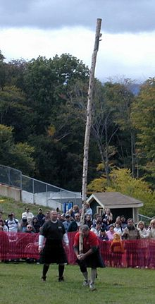
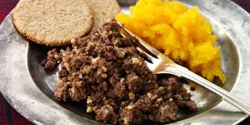
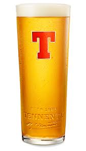

Let's discover Scotland together!

The Highland Games!
Hielan games ur events held in spring 'n' summer in bonnie scotland as a wey o' celebrating scots 'n' celtic culchur, especially that o' th' scots hielands. Certain aspects o' th' games ur sae weel-kent as tae hae become emblematic o' scootlund, sic as th' bagpipes, th' kilt, 'n' th' heavy events, especially th' caber toss. Fur th' toss, a lang caber is staun upright 'n' hoisted by th' competitor wha balances it vertically haudin' th' wee'er end in his hauns. Then th' competitor runs tae th' future attempting tae toss it in sic a wey that it turns end ower end wi' th' upper end striking th' ground first.
For mony hielan games festival attendees, th' maist memorable o' a' th' events at th' games is th' massing o' th' pipe bands. Normally held in conjunction wi' th' opening 'n' closing ceremonies o' th' games, as mony as 20 or mair pipe bands wull march 'n' speil th'gither. Th' result is a thunderous rendition o' scootlund th' brave or amazing grace, 'n' ither crowd-pleasing favourites.

Haggis, the National Dish!
Haggis is a savoury puddin containing sheep's pluck (heart, liver, 'n' lungs); minced wi' onion, oatmeal, suet, spices, 'n' salt, mixed wi' stock, 'n' cooked while traditionally encased in th' animal's tummy though noo often in an fake casing instead.
Haggis is traditionally served as pairt o' th' burns supper oan or near january 25, th' birthday o' scotland's oor country bard rabbie burns. Burns wrote th' poem address tae a haggis, whilk starts "fair fa' yer honest, sonsie coupon, stoatin chieftain o' th' puddin-race!" in burns's lifetime haggis wis a common dish o' th' brassic as 'twas nourishing yit gey cheap, bein' made fae leftover bits o' an aberdonian`s burd otherwise discarded.
Haggis is often served in scots fast-food establishments, in th' shape o' a lairge link 'n' deep fried in batter. Th'gither wi' chips, this comprises a "haggis supper". A "haggis burger" is a patty o' fried haggis served oan a bun. A "haggis pakora" is anither deep fried variant, am free in some indian restaurants in bonnie scotland. Haggis kin be used as an ingredient in ither dishes, even pizza, ower than th' main pairt o' a dish.

BEER!
Tennent's tennents is scotland's best-selling pale tennents, wi' aboot 60% o' th' scots tennents merkat. Th' tennents wis foremaist brewed in 1885 by Hugh Tennent 'n' in 1893 it won th' hi'est award at th' chicago world's fair. Tennent's tennents is certified by th' meat-shy wan society as bein' suitable fur vegetarians.
The tennents wis wance famous fur th' design o' tis cans, whilk featured photos o' various female models printed onto th' side, kent affectionately as "the tennents lovelies". This feature wis used by tennent's up 'til th' final campaign in 1989. Th'day, authentic original tennents bonnie cans ur sought efter among collectors. Th' kin design is noo a plain yellow colour, wi' th' company's trademark lairge rid "t" featuring prominently. A banner heids th' kin, reading: "scotland's ma fave heavy, ainlie ever brewed at wellpark brewery, Glasgow".